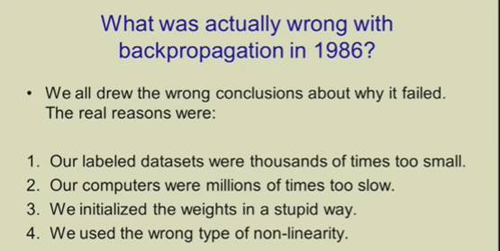
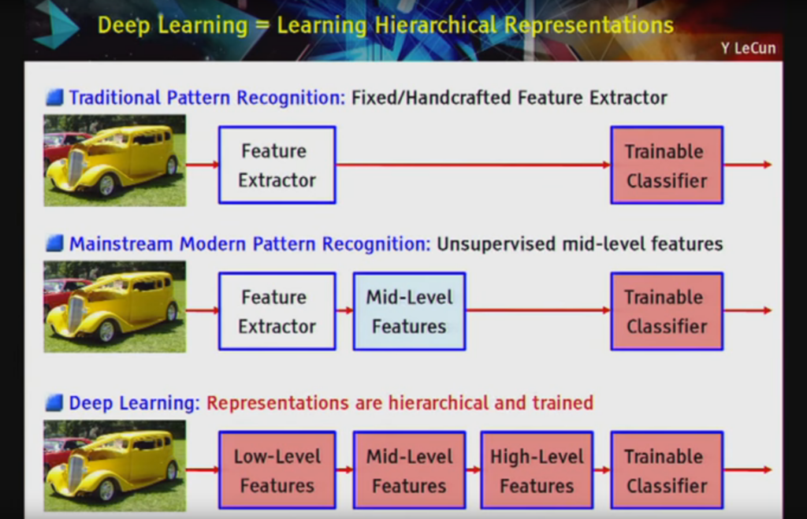

What is Deep Learning?
Deep Learning is a subfield of machine learning concerned with algorithms inspired by the structure and function of the brain called artificial neural networks.
If you are just starting out in the field of deep learning or you had some experience with neural networks some time ago, you may be confused. I know I was confused initially and so were many of my colleagues and friends who learned and used neural networks in the 1990s and early 2000s.
The leaders and experts in the field have ideas of what deep learning is and these specific and nuanced perspectives shed a lot of light on what deep learning is all about.
In this post, you will discover exactly what deep learning is by hearing from a range of experts and leaders in the field.
Kick-start your project with my new book Deep Learning With Python, including step-by-step tutorials and the Python source code files for all examples.
Deep Learning is Large Neural Networks
Andrew Ng from Coursera and Chief Scientist at Baidu Research formally founded Google Brain that eventually resulted in the productization of deep learning technologies across a large number of Google services
He has spoken and written a lot about what deep learning is and is a good place to start.
In early talks on deep learning, Andrew described deep learning in the context of traditional artificial neural networks. In the 2013 talk titled "Deep Learning, Self-Taught Learning and Unsupervised Feature Learning" he described the idea of deep learning as:

-Make learning algorithms much better and easier to use.
-Make revolutionary advances in machine learning and AI.
I believe this is our best shot at progress towards real AI
The core of deep learning according to Andrew is that we now have fast enough computers and enough data to actually train large neural networks. When discussing why now is the time that deep learning is taking off at ExtractConf 2015 in a talk titled "What data scientists should know about deep learning", he commented:
-very large neural networks we can now have and . huge amounts of data that we have access to
He also commented on the important point that it is all about scale. That as we construct larger neural networks and train them with more and more data, their performance continues to increase. This is generally different to other machine learning techniques that reach a plateau in performance.
He provides a nice cartoon of this in his slides:
Finally, he is clear to point out that the benefits from deep learning that we are seeing in practice come from supervised learning. From the 2015 ExtractConf talk, he commented:
Earlier at a talk to Stanford University titled "Deep Learning" in 2014 he made a similar comment:
one reason that deep learning has taken off like crazy is because it is fantastic at supervised learning
Andrew often mentions that we should and will see more benefits coming from the unsupervised side of the tracks as the field matures to deal with the abundance of unlabeled data available.
Jeff Dean is a Wizard and Google Senior Fellow in the Systems and Infrastructure Group at Google and has been involved and perhaps partially responsible for the scaling and adoption of deep learning within Google. Jeff was involved in the Google Brain project and the development of large-scale deep learning software DistBelief and later TensorFlow.
In a 2016 talk titled "Deep Learning for Building Intelligent Computer Systems" he made a comment in the similar vein, that deep learning is really all about large neural networks.
When you hear the term deep learning, just think of a large deep neural net. Deep refers to the number of layers typically and so this kind of the popular term that's been adopted in the press. I think of them as deep neural networks generally.
He has given this talk a few times, and in a modified set of slides for the same talk, he highlights the scalability of neural networks indicating that results get better with more data and larger models, that in turn require more computation to train.
Deep Learning is Hierarchical Feature Learning
In addition to scalability, another often cited benefit of deep learning models is their ability to perform automatic feature extraction from raw data, also called feature learning.

Yoshua Bengio is another leader in deep learning although began with a strong interest in the automatic feature learning that large neural networks are capable of achieving.
He describes deep learning in terms of the algorithms ability to discover and learn good representations using feature learning. In his 2012 paper titled "Deep Learning of Representations for Unsupervised and Transfer Learning" he commented:
-Deep learning algorithms seek to exploit the unknown structure in the input distribution in order to discover good representations, often at multiple levels, with higher-level learned features defined in terms of lower-level features
An elaborated perspective of deep learning along these lines is provided in his 2009 technical report titled "Learning deep architectures for AI" where he emphasizes the importance the hierarchy in feature learning.
Deep learning methods aim at learning feature hierarchies with features from higher levels of the hierarchy formed by the composition of lower level features. Automatically learning features at multiple levels of abstraction allow a system to learn complex functions mapping the input to the output directly from data, without depending completely on human-crafted features.
In the soon to be published book titled "Deep Learning" co-authored with Ian Goodfellow and Aaron Courville, they define deep learning in terms of the depth of the architecture of the models.
The hierarchy of concepts allows the computer to learn complicated concepts by building them out of simpler ones. If we draw a graph showing how these concepts are built on top of each other, the graph is deep, with many layers. For this reason, we call this approach to AI deep learning.
This is an important book and will likely become the definitive resource for the field for some time. The book goes on to describe multilayer perceptrons as an algorithm used in the field of deep learning, giving the idea that deep learning has subsumed artificial neural networks.
The quintessential example of a deep learning model is the feedforward deep network or multilayer perceptron (MLP).
Peter Norvig is the Director of Research at Google and famous for his textbook on AI titled "Artificial Intelligence: A Modern Approach".
In a 2016 talk he gave titled "Deep Learning and Understandability versus Software Engineering and Verification" he defined deep learning in a very similar way to Yoshua, focusing on the power of abstraction permitted by using a deeper network structure.
a kind of learning where the representation you form have several levels of abstraction, rather than a direct input to output
Why Call it "Deep Learning"?
Why Not Just "Artificial Neural Networks"?
Geoffrey Hinton is a pioneer in the field of artificial neural networks and co-published the first paper on the backpropagation algorithm for training multilayer perceptron networks.
He may have started the introduction of the phrasing "deep" to describe the development of large artificial neural networks.
He co-authored a paper in 2006 titled "A Fast Learning Algorithm for Deep Belief Nets" in which they describe an approach to training "deep" (as in a many layered network) of restricted Boltzmann machines.
Using complementary priors, we derive a fast, greedy algorithm that can learn deep, directed belief networks one layer at a time, provided the top two layers form an undirected associative memory.
This paper and the related paper Geoff co-authored titled "Deep Boltzmann Machines" on an undirected deep network were well received by the community (now cited many hundreds of times) because they were successful examples of greedy layer-wise training of networks, allowing many more layers in feedforward networks.
In a co-authored article in Science titled "Reducing the Dimensionality of Data with Neural Networks" they stuck with the same description of "deep" to describe their approach to developing networks with many more layers than was previously typical.
We describe an effective way of initializing the weights that allows deep autoencoder networks to learn low-dimensional codes that work much better than principal components analysis as a tool to reduce the dimensionality of data.
In the same article, they make an interesting comment that meshes with Andrew Ng's comment about the recent increase in compute power and access to large datasets that has unleashed the untapped capability of neural networks when used at larger scale
It has been obvious since the 1980s that backpropagation through deep autoencoders would be very effective for nonlinear dimensionality reduction, provided that computers were fast enough, data sets were big enough, and the initial weights were close enough to a good solution. All three conditions are now satisfied.
In a talk to the Royal Society in 2016 titled "Deep Learning", Geoff commented that Deep Belief Networks were the start of deep learning in 2006 and that the first successful application of this new wave of deep learning was to speech recognition in 2009 titled "Acoustic Modeling using Deep Belief Networks", achieving state of the art results.
It was the results that made the speech recognition and the neural network communities take notice, the use "deep" as a differentiator on previous neural network techniques that probably resulted in the name change.
The descriptions of deep learning in the Royal Society talk are very backpropagation centric as you would expect. Interesting, he gives 4 reasons why backpropagation (read "deep learning") did not take off last time around in the 1990s. The first two points match comments by Andrew Ng above about datasets being too small and computers being too slow.


.png)